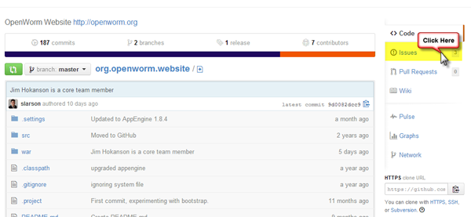
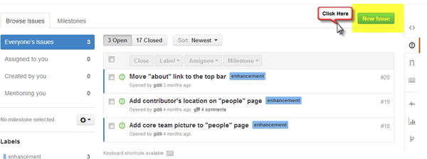
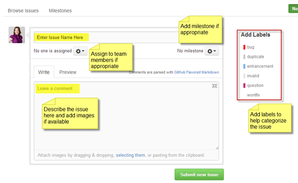

Using OpenWorm Repositories on GitHub¶
Making a contribution of code to the project will first involve forking one of our repositories, making changes, committing them, creating a pull request back to the original repo, and then updating the appropriate part of documentation.
An alternate way to contribute is to create a new GitHub repo yourself and begin tackling some issue directly there. We can then fork your repo back into the OpenWorm organization at a later point in order to bring other contributors along to help you.
This page contains a list of repositories maintained by the OpenWorm project on GitHub, provides simple instructions for how to access GitHub, contribute and resolve issues, opening new issues, and creating Gists.
Repositories¶
View the full current list of OpenWorm repositories on GitHub.
Accessing GitHub¶
To access the OpenWorm organization on GitHub and fully participate on issues, you will first need to create an account if you do not already have one. Note, you can comment on issues without a GitHub account, however, we recommend joining to maximize your ability to contribute to OpenWorm. Accounts are free and can be created on the Github website.
Forking GitHub Repositories¶
On GitHub, click the Fork button on a project to create a "copy" that you can then modify independently.
To fork an OpenWorm repository, go to the repository's page and hit the "Fork" button. GitHub will copy the repository to your personal repository. You can then make changes to the repository. Once you are done with the changes, commit them back to your personal account. Then hit the 'Pull Request' button on the repo page under your account. This will create a pull request asking the OpenWorm team to review, comment and merge the changes into the original repository. This follows the so-called 'fork and pull' model.
For further details on doing this, check out the help page from Github.
Contributing and Resolving Issues¶
View the complete list of issues on GitHub
To find issues that are relevant to your skillset and interest, first browse the list above and look for tags related to areas of functionality and coding language. Alternatively, you can view a specific repository and the filter by tags related to the type of issue and coding language. Click on the issue name to open the details. Feel free to explore and dig around.
Interacting with Issues¶
Generic information from GitHub
Closing an Issue¶
Opening a New Issue¶
After logging into GitHub, select the OpenWorm organization and then click on the repository in which the issue is located/relevant to. Click on the Issues tab on the menu to the right.

Next, click on the New Image button in the upper right corner of the screen.

This will open the interface to create a new issue. You will need to add the following information:
- Name or short description of the issue
- Full description of the issue, including images if available. (See below for more details on formatting the description.)
- Assign team members to the issue if appropriate
- Add a milestone if appropriate
- Add labels to categorize the issue such as what language is being used, issue status (not started, working, etc.) and what function the issue is related to.

Finally, click on Submit New Issue.
Best Practices for OpenWorm
When writing up the description for a given issue, provide as much context and detail as possible. For clarity, we suggest the following format:
- Issue: Summarize the issue at hand and provide links when possible to relevant code, databases and information.
- Motivation: Provide a reasoning for the request and what resolving the issue will fix or what purpose it will serve.
- Steps: Create a list of specific steps that need to be completed to resolve the issue.
Links to relevant code, databases, documentation and related issues are strongly recommended.
Check out this example of a clearly written issue that follows best practices.
Posting Gists (gist.github.com)¶
Gist is a simple way to share snippets and pastes with others. All gists are Git repositories, so they are automatically versioned, forkable and usable from Git. You can create a new gist here.
How to:
Creating or Adding New Repositories¶
Already existing repositories can be transferred into the OpenWorm GitHub organization via the "transfer" mechanism provided by GitHub. New repositories can be created under the OpenWorm GitHub organization by request.
Contributing to Design Document Implementation¶
Design Documents specify what to build. GitHub issues (generated from DD Integration Contracts) specify the work breakdown.
DD Contribution Workflow¶
- Browse Design Documents — find a DD matching your interest (neural modeling -> DD001, visualization -> DD014, etc.)
- Read the DD — understand the goal, deliverables, and quality criteria
- Read "How to Build & Test" section — copy-pasteable commands to get started
- Check for GitHub issues labeled
dd###(e.g.,dd005for DD005) - Claim an issue — comment: "I'll work on this, ETA: X days"
- Implement according to DD spec — Quality Criteria define acceptance
- Run tests:
docker compose run quick-test(per-PR),docker compose run validate(pre-merge) - Open PR referencing the DD and issue
- Mind-of-a-Worm pre-review — AI checks DD compliance automatically
- Human L3+ review — Final approval gate
Contributor Levels¶
See DD011 (Contributor Progression) for the L0 to L5 path:
| Level | Role | Can Do |
|---|---|---|
| L0 | Observer | Read DDs, watch meetings, join Slack |
| L1 | Apprentice | Doc fixes, test improvements (3 orientation tasks) |
| L2 | Junior Contributor | Open PRs to designated subsystems |
| L3 | Contributor | Review/merge L1-L2 PRs, GitHub commit access |
| L4 | Senior Contributor | Architectural decisions, write Design Documents |
| L5 | Founder / Steering | Set direction, approve DDs, resolve conflicts |
Licenses on repositories¶
In historical practice, OpenWorm members have chosen to use the MIT open source license for their repositories. The ultimate choice of license is up to the the authors of a given repository, but we would ask that all OpenWorm repository authors choose some open source license for your repository and display a LICENSE file in the root of the repository to make it clear how to use it.
An example of using the MIT license for OpenWorm code follows:
The MIT License (MIT)
Copyright (c) 2014 OpenWorm
Permission is hereby granted, free of charge, to any person obtaining a copy of this software and associated documentation files (the "Software"), to deal in the Software without restriction, including without limitation the rights to use, copy, modify, merge, publish, distribute, sublicense, and/or sell copies of the Software, and to permit persons to whom the Software is furnished to do so, subject to the following conditions:
The above copyright notice and this permission notice shall be included in all copies or substantial portions of the Software.
THE SOFTWARE IS PROVIDED "AS IS", WITHOUT WARRANTY OF ANY KIND, EXPRESS OR IMPLIED, INCLUDING BUT NOT LIMITED TO THE WARRANTIES OF MERCHANTABILITY, FITNESS FOR A PARTICULAR PURPOSE AND NONINFRINGEMENT. IN NO EVENT SHALL THE AUTHORS OR COPYRIGHT HOLDERS BE LIABLE FOR ANY CLAIM, DAMAGES OR OTHER LIABILITY, WHETHER IN AN ACTION OF CONTRACT, TORT OR OTHERWISE, ARISING FROM, OUT OF OR IN CONNECTION WITH THE SOFTWARE OR THE USE OR OTHER DEALINGS IN THE SOFTWARE.